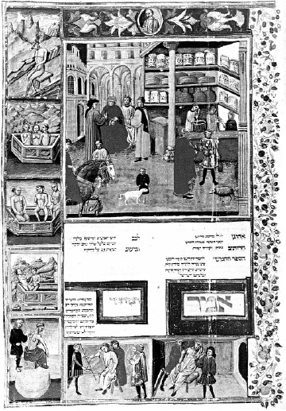

ŞEKİL 47. İbn Sina’nın El-Kânun’unun İbranice bir çevirisinde yer alan bir resimde, açık raflarda güzel kaplarla birlikte bir eczane sahnesi: Vinyette güneş banyosu yapan hasta, teknede yıkanan insan grupları, şişe çekme, damardan kan alma ve göğüs delme işlemi gibi sahneler görülmektedir (Biblioteca Universitaria di Bologna).34, 75
İslâm kaynakları basit ilaçlarla bileşik ilaçları birbirinden her zaman ayırmıştır. Birinci grup, “müfredât” diye, ikinci grup ilaçlar ise “mürekkebât” ya da “akrabadin” diye anılıyordu.
Cürcis ibn Bahtişû (ölm.771) Kitab Kuvve el-Edviyeh el-Müfrede (Basit İlaçların Gücü Konusunda Kitap) adlı bir kitap yazmıştı. El-Râzî’nin El- Havî’sinde alfabetik sırada 829 ilaç ve özellikleri sıralanmıştır. 10. yüzyılda Kurtuba’lı Ebubekir ibn Samgûn’un, ilaçları alfabetik sıraya göre ele aldığı Kitab el-Câmî bi Akvâl el-Kudemâ ve’l-Muhaddisîn minel-Etibbâ ve’l- Mütefelsifîn fi’l-Edviyet el-Müfrede (Hekim ve Filozoflar Arasında Eski ve Yeni Adamların Basit İlaçlarla İlgili Görüşlerini Toplu Şekilde Ele Alan Kitap) başlıklı kitabı ile yine İspanya’da yazılmış olan İbn Cülcül’ün (ölm. ~1000) Dioskorides’in Gözünden Kaçanlar adlı yapıtı, eczacılık konulu İslâm eserlerinin ilklerindendir.
Farsça ilk ilaç risalesi, tıbbî öneminden çok filolojik önem taşıyan ve 585 tür ilacı tanımlayan Kitab el-Ebniye an Hakâik el-Edviye (İlaçların Gerçek Özelliklerine İlişkin Kitap) olup 975 yılı dolayında Herat’lı Ebu Mansur Muvaffak tarafından kaleme alınmıştır. Bu kitapta Yunan, Süryani, Arap, İran ve Hint ilaç bilgileri derlenmiştir. Aynı türde pek çok sayıda Arapça kitap da yazılmıştır. Mâseveyh el-Maridînî (ölm. 1015) ve İspanya’da İbn Vâfid’inkiler (ölm. ~1074) böyle Arapça yapıtlardır. Bunların her ikisi de Latince çevirilerinden, Batı’da iyi tanınmaktadırlar.
Doğu’da ise, hekim ve simyacı Ebu Abdullah Muhammed ibn Umeyl el-Temîmî’nin (~900-960) hem beslenme hem de farmakoloji bakımından önem taşıyan Kitab el-Mürşid fî Cemâhir el-Agziye ve Kuva’l-Müfredât minel-Edviye (Basit İlaçların Etkileri ve Değerli Besin Maddeleri Konusunda Kılavuz Kitap) adlı yapıtı ile aynı yazarın Kitab el-İtimâd fi’l-Edviyet el-Müfrede (Basit İlaçlar Konusunda Güvenilir Kitap) adlı yapıtı ortaya çıkmıştır.
Farmakoloji konusunda belki en değerli İslâm yapıtı, el-Bîrûnî tarafından yazılmıştır. Onun Kitab el-Saydala fi’l-Tıbb (Eczacılık ve Tıbbî Maddeler Kitabı) adlı bu yapıtı Ebubekir el-Kâşânî (ölm. 1436) tarafından Farsça’ya da çevrilmiştir. Kitap, Bursa Kurşunlu Kütüphanesi’nde Zeki Velidi Togan (1890-1970) tarafından bulunup tanıtılmıştır. El-Bîrûnî’ye göre yediğimiz-içtiğimiz şeyler, yiyecekler ve zehirli maddeler olarak ikiye ayrılıyor, bu iki grup arasında ise ilaçlar yer alıyordu. İlaçlar, gıdalara oranla bedene zarar verirlerse de zehirlere oranla bedene şifa verirlerdi. Bu ilaçların kimileri ilaç olmakla birlikte âdeta gıda olduğundan bu tür ilaçlara “devâî gıda” (şifalı gıda), kimileri de zehir olmakla birlikte aynı zamanda ilaç olduğundan bunlara “semmî devâ” (zehirli ilaç) denilmiştir.
Bütün eczaneler, 9. yüzyılda Halife el-Me’mun’un (yön. 813-833) zamanından itibaren devlet denetimi altına girmiştir. İslâm dünyasında, herkesçe kabul edilmiş bulunan ilaç bileşimlerinin en iyisini yapabilmek suretiyle ilaçları toplamayı kendisine sanat edinmiş kişilere “saydanâni” ya da “saydalâni”, ilaçlara ve özellikle de bitkisel ilaçlara “ukkar” denirdi. ”Saydanâni” sözcüğü, özgün anlamı “sandal ağacı satıcısı” olup Arapça’da ilaç tüccarı, eczacı ya da aktar anlamına gelir ve sandal ağacı anlamına Hintçe “chandan”dan türemedir. İlaç tüccarları deniz yoluyla Hindistan’dan Arabistan’a bol miktarda sandal ağacı getiriyorlardı.87 Hekimlerin bir başkanı olduğu gibi, eczacılara da her kentte bir eczacıbaşı atanmıştı. Eczacıbaşı yeni yetişen eczacıları sınava alır ve onlara yeterlik belgesi verirdi. İbn el-Baytar da Kahire’de eczacıbaşı olmuş ve uzun yıllar bu görevde kalmıştı. Selçuklular döneminde eczacılık konusunda bize ayrıntılı bilgi verebilecek en önemli kaynaklar, El-Bîrûnî’nin Kitab el-Saydala... adlı yapıtı ile, Anadolu’da da bizzat bitkiler üzerine incelemeler yapmış olan İbn el-Baytar’ın Kitab el-Câmi li-Müfredat el-Edviye ve’l-Agdiye (Basit İlaç ve Gıda Maddelerini Kapsayan Kitap). El-Bîrûnî’nin kitabının önemi, o dönemde kullanılan ilaçlar üzerine verdiği bilgiler yanında, eczacılık mesleğinin ayrıntılı ve gerçek bir tanımını da vermesidir. İbn el-Baytar’ın kitabında ise İspanya’dan Suriye ve Anadolu’ya dek Akdeniz kıyılarından toplanmış bitkilerden elde edilen 1400’ü aşkın tıbbî ilaç tanımlanmış ve bunlar daha eski yapıtlardaki ilaçlarla karşılaştırılmıştır. Buradaki eczaların 200’ü bitkisel olup yeni ecza tanıtmıştır. Bu kitap aynı zamanda botanik konusunda kapsamlı araştırma ve gözleme dayalı en büyük Arapça kitap niteliğindedir.
Karışım (bileşik) ilaçlar, Müslüman dillerinde “akrabadin” adıyla bilinecek olan ilaç listeleri ya da katalogu (Lat. “pharmacopoeia”) halinde ele alınırdı. 9. yüzyılda, biri Gondeşapur’dan (Cundişapur) Sâbur ibn Sehl’in (ölm. 850), ötekisi filozof el-Kindî’nin olmak üzere iki “akrabadin” hazırlandı. Eczacılar ve diğer ilaç hazırlayıcıları için ilaç formülleri içeren farmasötik eczacılık literatürünün prototipi, 9. yüzyıl ortasında Doğu halifeliğinde Sâbur ibn Sehl tarafından çoğu alfabetik düzenlenmiş ilaç ve reçete formüllerinin ve önerilerin yer aldığı El-Akrabadin el-Kebir (Karışım İlaçlar Üzerine Büyük Kitap) adlı eserdir. Aynı şekilde el-Râzî, biri büyük biri de küçük olmak üzere iki akrabadin hazırladı. Bu sözcük, Latince yazmalara “grabadin” diye geçmiştir. Ortaçağ İslâm eczacılığının en ünlü kişisi olan ve adını İran’da doğduğu Rey kentinden (bugünkü Tahran’ın güneyinde eski bir kent) alan el-Râzî, yaşamının geç döneminde kör olmuş; karanlık bilimlerle uğraşan bir dostu, çare olarak gözlerinden ameliyat olmasını önerdiğinde, el-Râzî’nin yanıtı, “Bu yaşlı dünyayı yeterince gördüm ve artık daha fazla görme umuduyla bir ameliyat işkencesinin ıstırabına katlanmayı düşünmüyorum” şeklinde olmuştur. El-Kindî’nin, çok sayıda uçucu yağı betimlediği, Kitab Kimiya el-Itr ve’l-Tâsidât (Parfüm Kimyası ve Damıtma Üzerine Kitap) adlı önemli bir eseri vardır ve bu eserinde kâfur ağacı odunundan damıtmayla kâfur elde edilmesinden de söz etmektedir. Endülüs Emevi halifeliğinde ise İbn Abd Rabbi’nin El-Dukkan (Eczane) adlı eseri bulunmaktadır.
Daha sonraki dönemlerin benzer konudaki Arapça yapıtlarından en popüler olanları, her ikisi de Kahire’de yazılmış olan, Yahudi hekim Kohen el-Attar’ın (13. yüzyıl) Minhac el-Dukkan (Eczane Yönetimi) adlı ve Dâvud el-Antâkî’nin (1541-1599) Anılar adlı kitaplarıdır. Bu kitaplardaki eski ve karmaşık reçetelerin çoğu, Avrupa eczanelerine dek yayılmış, böylece eczacılığa ilişkin kimi adlar da Doğu’dan Batı’ya geçmiştir. Bunlar arasında en bilinenleri “julep” (Farsçada gülsuyu anlamına “gülâb / cülâb”dan) ile “syrup”tur (Arapça şurup anlamına “şurb”dan).8